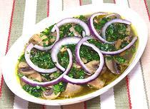

|
Mushrooms à la GrecqueItaly - Funghi di Coltura Ateniesi | ||||
| Serves: Effort: Sched: DoAhead: |
6 salad ** 50 min Best |
Mushrooms Greek Style - an interesting and refreshing lemony (but not too tart) salad or appetizer that can be made easily in any quantity - and well ahead of need. | |||
|
|
1-1/2 ------ 2 2 2 1 1/3 1/3 2 5 1/3 ------ 1/3 4 |
# --- oz T cl c c c t --- c oz |
Mushrooms (1) -- Marinade Celery Parsley Garlic Bay Leaf Lemon Juice Olive Oil, ExtV Water Peppercorns Salt -- Garnish Parsley (more) Onion, Red |
PREP - (25 min)
|